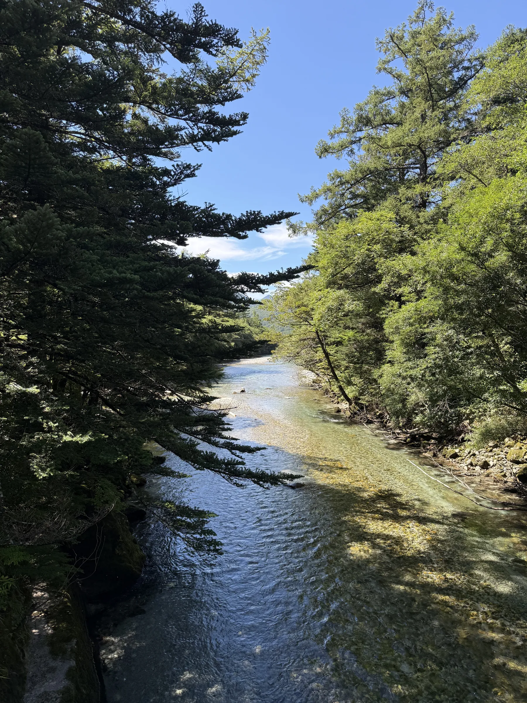

PeoplePPL
PeoplePPL
Issue No. 0217 photographs
Japan
September 2025
From a castle moat between office towers to the macaques in the forest, clear rivers under the peaks, thatched houses, a bamboo grove and empty beaches. Seventeen photographs.
Contributors
Maria Prats Munar
